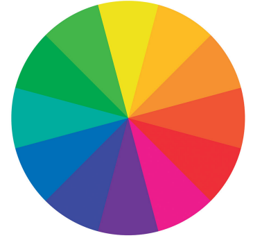
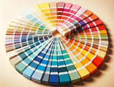

<!doctype html>
<html lang="es">
<head>
<link rel="stylesheet" type="text/css" href="base.css" />
<link rel="stylesheet" type="text/css" href="content.css" />
<link rel="stylesheet" type="text/css" href="nav.css" />
<meta http-equiv="content-type" content="text/html;  charset=utf-8" />
<title>Tema 8: Creando un círculo cromático | Educación Artística, 1° grado del nive secundario </title>
<link rel="shortcut icon" href="favicon.ico" type="image/x-icon" />
<meta name="author" content="Prof. Joe Mena" />
<meta name="generator" content="eXeLearning 2.9 - exelearning.net" />
<!--[if lt IE 9]><script type="text/javascript" src="exe_html5.js"></script><![endif]-->
<script type="text/javascript" src="exe_jquery.js"></script>
<script type="text/javascript" src="common_i18n.js"></script>
<script type="text/javascript" src="common.js"></script>
<meta name="viewport" content="width=device-width, initial-scale=1" />
</head>
<body class="exe-web-site" id="exe-node-23"><script type="text/javascript">document.body.className+=" js"</script>
<div id="content">
<p id="skipNav"><a href="#main" class="sr-av">Saltar la navegación</a></p>
<header id="header" ><div id="headerContent">Educación Artística, 1° grado del nive secundario</div></header>
<nav id="siteNav">
<ul>
   <li><a href="index.html" class="daddy main-node">EDUCACION ARTISTICA</a></li>
   <li class="current-page-parent"><a href="unidad_1_artes_visuales.html" class="current-page-parent daddy">UNIDAD 1, Artes Visuales</a>
   <ul>
      <li><a href="tema_1_pintando_la_vida_darle_forma_a_la_vida_a_travs_de__un_dibujo.html" class="no-ch">Tema 1: Pintando la vida. Darle forma a la vida a través de  un dibujo</a></li>
      <li><a href="tema_2_me_comunico_con_dibujos.html" class="no-ch">Tema 2: Me comunico con dibujos</a></li>
      <li><a href="tema_3_inventario_visual_una_mirada_formal_e_iconogrfica.html" class="no-ch">Tema 3: Inventario visual, una mirada formal e iconográfica.</a></li>
      <li><a href="tema_4_crear_obras_de_arte_usando_la_tcnica_del_dibujo_y__del_uso_del_claroscuro.html" class="no-ch">Tema 4: Crear obras de arte usando la técnica del dibujo y  del uso del claroscuro</a></li>
      <li><a href="tema_5_la_mitad_de_mi_cara_en_escala_de_grises.html" class="no-ch">Tema 5: La mitad de mi cara en escala de grises</a></li>
      <li><a href="tema_6_prctica_de_textura_visual.html" class="no-ch">Tema 6: Práctica de textura visual</a></li>
      <li><a href="tema_7_descubriendo_colores_mgicos.html" class="no-ch">Tema 7: Descubriendo Colores Mágicos</a></li>
      <li id="active"><a href="tema_8_creando_un_crculo_cromtico.html" class="active no-ch">Tema 8: Creando un círculo cromático</a></li>
   </ul>
   </li>
   <li><a href="unidad_2_artes_escnicas.html" class="daddy">UNIDAD 2: Artes Escénicas</a>
   <ul class="other-section">
      <li><a href="el_cuerpo_como_generador_de_movimiento.html" class="no-ch">El cuerpo como generador de movimiento</a></li>
      <li><a href="el_cuerpo_genera_lenguajes_artsticos_en_el_teatro_gestos_palabras_y_acciones.html" class="no-ch">El cuerpo genera lenguajes artísticos en el teatro: gestos, palabras y acciones</a></li>
   </ul>
   </li>
   <li><a href="unidad_3_educacin_musical.html" class="daddy">UNIDAD 3: Educación Musical</a>
   <ul class="other-section">
      <li><a href="seccin_las_primeras_notas.html" class="no-ch">Sección: Las primeras notas</a></li>
      <li><a href="seccin_melodas_frases_semifrases_y_motivo.html" class="no-ch">Sección: Melodías, frases, semifrases y motivo</a></li>
      <li><a href="seccin_con_mi_flauta_repite_despus_de_mi.html" class="no-ch">Sección: Con mi flauta, repite después de mi</a></li>
      <li><a href="seccin_preparemos_el_edificio.html" class="no-ch">Sección: Preparemos el edificio</a></li>
   </ul>
   </li>
   <li><a href="unidad_4_artes_aplicadas.html" class="daddy">UNIDAD 4: Artes Aplicadas</a>
   <ul class="other-section">
      <li><a href="disea_tu_propio_cartel_visual.html" class="no-ch">Diseña tu propio cartel visual</a></li>
      <li><a href="diseo_textil.html" class="no-ch">Diseño textil</a></li>
      <li><a href="creo_y_diseo_mi_bolso_reciclado.html" class="no-ch">Creo y diseño mi bolso reciclado</a></li>
      <li><a href="crear_una_mueca_sin_rostro_de_papel_mach.html" class="no-ch">Crear una muñeca sin rostro de papel maché</a></li>
      <li><a href="diario_artstico.html" class="no-ch">Diario artístico</a></li>
   </ul>
   </li>
</ul>
</nav>
<div id='topPagination'>
<nav class="pagination noprt">
<a href="tema_7_descubriendo_colores_mgicos.html" class="prev"><span><span>&laquo; </span>Anterior</span></a> <span class="sep">| </span><a href="unidad_2_artes_escnicas.html" class="next"><span>Siguiente<span> &raquo;</span></span></a>
</nav>
</div>
<div id="main-wrapper">
<section id="main">
<header id="nodeDecoration"><h1 id="nodeTitle">Tema 8: Creando un círculo cromático</h1></header>
<article class="iDevice_wrapper preknowledgeIdevice em_iDevice em_iDevice_preknowledge" id="id37">
<div class="iDevice emphasis1" >
<header class="iDevice_header"><h1 class="iDeviceTitle">Conocimiento previo</h1></header>
<div class="iDevice_inner">
<div class="iDevice_content_wrapper">
<div id="ta37_141_2" class="block iDevice_content">
<figure class="exe-figure exe-image float-right license-custom" style="width: 378px;">
<figcaption class="figcaption"></figcaption>
</figure>
<p> <strong>¿Qué vamos a hacer?</strong><br />Vamos a crear un circulo cromático para ver el origen de los colores <br />secundarios y establecer cuáles son los complementarios.</p>
<p><strong>¿Qué es un círculo cromático?</strong></p>
<p>El círculo cromático nos ayuda a entender y a visualizar todos los colores a la vez, al tiempo que nos permite ubicar las armonías en el color. Es útil para comprender por qué algunos tonos combinan bien y terminan haciendo más fácil que las paletas funcionen.</p>
</div>
</div>
</div>
</div>
</article>
<article class="iDevice_wrapper activityIdevice em_iDevice em_iDevice_activity" id="id38">
<div class="iDevice emphasis1" >
<header class="iDevice_header"><h1 class="iDeviceTitle">Actividad</h1></header>
<div class="iDevice_inner">
<div class="iDevice_content_wrapper">
<div id="ta38_142_2" class="block iDevice_content">
<figure class="exe-figure exe-image float-left license-custom" style="width: 193px;"></figure>
<p>■ <strong>¿Por qué lo vamos a hacer?</strong><br />Realizar un círculo cromático nos ayuda a comprender cómo funcionan los colores y sus relaciones. Nos permite aprender sobre la mezcla de colores primarios para crear secundarios, entender contrastes <br />y armonías cromáticas, y aplicar estos conceptos en actividades artísticas y diseño visual.<br /><strong>■ ¿Qué necesitas para hacerlo?</strong><br />– Cartulina blanca (tamaño carta)<br />– Tempera con los colores primarios (rojo, azul y amarillo). Si no tienes tempera, puedes usar cualquier otro tipo de pintura, (previa consulta de con un adulto, pues es posible que seas alérgico aalguna).<br />– Un vaso con agua<br />– Pincel<br />– Paleta de plástico o un plato desechable<br /><strong>■ ¿Cómo lo vas a hacer?</strong><br />– Preparación del espacio: Organiza una zona de trabajo con todos los materiales necesarios. Asegúrate de que haya suficiente espacio para que puedas trabajar cómodamente y de manera autónoma.<br />– Dibuja tres círculos entrecruzados de igual tamaño en la hoja (de modo que queden uno a la izquierda, uno a la derecha y el último, <br />debajo, en el centro de los dos), creando una especie de “Diagrama de Venn” con tres círculos. Cada par de círculos entrecruzados <br />debe definir un espacio común entre ellos y en el centro otro espacio en el que coinciden los tres círculos. (Puedes usar un platillo, <br />un baso o cualquier otro objeto redondo para crear los círculos, o un compás).<br />– En la región donde se superponen los círculos izquierdo y derecho, colorea con el color correspondiente a la mezcla de sus colores primarios: por ejemplo, amarillo (izquierdo) y azul (derecho) darán lugar al color secundario verde.<br />– En la región donde se superponen los círculos izquierdo y central, aplica el color correspondiente al secundario que surge de sus colores primarios: por ejemplo, amarillo (izquierdo) y rojo (central) darán lugar al color secundario naranja.<br />– En la región donde se superponen los círculos central y derecho, aplica el color correspondiente al secundario que surge de sus colores primarios: por ejemplo, azul (central) y rojo (derecho) darán lugar al color secundario morado (violeta).<br />– En la región donde los tres círculos se superponen, aplica el color negro para representar la ausencia de color, dado que todos los <br />colores se están mezclando en ese punto.<br />– Añade etiquetas a los colores primarios, secundarios y al negro para una mayor claridad.</p>
<p><strong>Recuerda</strong> que este es un proceso manual y puede variar en función de tus preferencias y habilidades artísticas. ¡Espero que esta descripción te ayude a visualizar cómo crear el círculo cromático que estás buscando!</p>
</div>
</div>
</div>
</div>
</article>
<article class="iDevice_wrapper objectivesIdevice em_iDevice em_iDevice_objectives" id="id39">
<div class="iDevice emphasis1" >
<header class="iDevice_header"><h1 class="iDeviceTitle"> ¿Para qué te sirve lo que acabas de hacer?</h1></header>
<div class="iDevice_inner">
<div class="iDevice_content_wrapper">
<div id="ta39_143_2" class="block iDevice_content">
<p>Crear un círculo cromático es fundamental ya que le permite comprender y explorar la teoría del color, las relaciones de tono y cómo <br />se mezclan los colores. Esto es esencial para lograr composiciones visuales armoniosas, precisas y expresivas en pintura, diseño gráfico y otras formas artísticas. También mejora su capacidad para tomar decisiones informadas sobre la paleta de colores y crear efectos visuales impactantes en sus obras.</p>
</div>
</div>
</div>
</div>
</article>
<div id="packageLicense" class="other-free-software">
<p><span>Licencia: </span> otras licencias de software libres</p>
</div>
</section>
</div>
<div id='bottomPagination'>
<nav class="pagination noprt">
<a href="tema_7_descubriendo_colores_mgicos.html" class="prev"><span><span>&laquo; </span>Anterior</span></a> <span class="sep">| </span><a href="unidad_2_artes_escnicas.html" class="next"><span>Siguiente<span> &raquo;</span></span></a>
</nav>
</div>
</div>
<p id="made-with-eXe"><a href="https://exelearning.net/" target="_blank" rel="noopener"><span>Creado con eXeLearning<span> (Ventana nueva)</span></span></a></p><script type="text/javascript" src="_style_js.js"></script></body></html>